All options to isolate miners from having moving belts in front of them appear to be beneficial. It's not clear there's an ultimate winner, but both side loading and splitters can be competitive.
When mining directly to a belt, is there a performance cost to have multiple idle miners unable to output to the same belt? Could such a performance penalty if it exists be mitigated by using splitters? Belts are multi-threaded, so in theory, avoiding additional checks on the miners would result in a net positive effect on performance.
This test consists of 4 otherwise equivalent designs, each of which produce a full blue belt of iron ore. Mining productivity is high enough that only a single miner is needed to saturate a half belt, only 2 miners per belt are active. All belts eventually terminate with a single loader into an infinity chest set to void items.
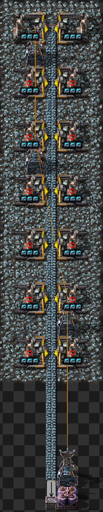
The first design just runs a belt past each miner. This is the simple option
The next designs have each pair of two miners mine to a dedicated belt, and then these belts are merged together prior to the infinity chest.
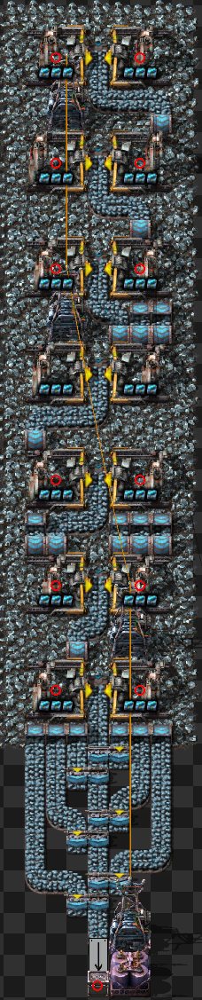
The two variants of this are the theorized best and worst case scenarios. In the first variant, the splitter closest to the infinity chest prioritizes the input side that has no other splitters on the belt prior to itself. This pattern repeats for every splitter, each prioritizing the side with a direct pair of miners attached.
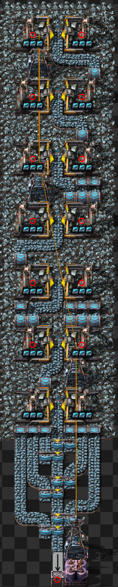
The second variant is the theorized worst case scenario. This prioritizes the splitters such that moving flow of items must pass through every splitter.
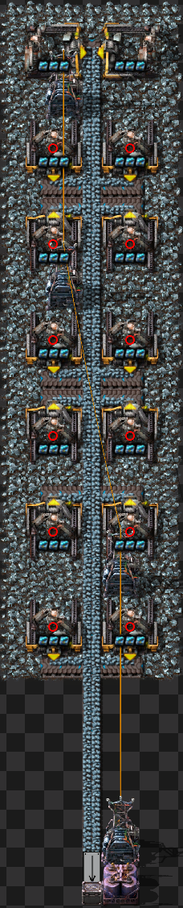
In the Technical Factorio discord, it was suggested to try side loading as well, so this fourth design is a simple line of belts where each miner mines to a small belt stub that side loads onto the main belt line.
All 4 of these designs were copied individually to a scale that would rival the largest megabases (roughly the ore requirement of a 50K SPM megabase). Each design was saved in a map and then each of the three maps was benchmarked using the inbuilt Factorio benchmark for 3 times at 1000 ticks. Care was taken to put each design in the same starting position before cloning to minimize the chance of performance effects due to chunk positioning
The prior sections were as the test was originally written. During further investigations, a couple of errors and additional scenarios were suggested to attempt.
The issues with the previous results were that the maps were cloned from a steady state design, but even still, transport lines require some warmup period before they settle into their final configuration. This update runs each map after cloning to let the transport lines stabilize.
In addition to that correction, a few new designs were put forward
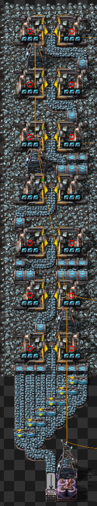
The first of these designs features a coalescing arrangement of splitters. This design allows any combination of inputs that yeild one full belt of material to output one full belt of material.
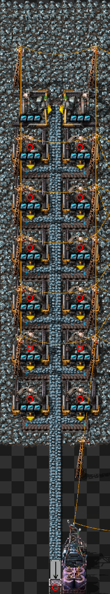
The next design was to compact the sideloading configuration. I initially did this because I thought that there were transport line splits being introduced due to the uneven spacing of the side loads, but that ended up being not the case. Thus, there should be neligible difference between this and the prior sideloading option tested here.
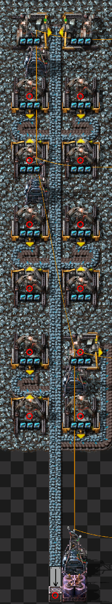
Another concept to test was to halve the number of sideloading points by combining the output of two miners into one belt that sideloads onto the "main" belt. This wouldn't be fully optimal once those side belts start being used (as one of the two miners would then have a moving belt in front of it), but this lets us test if the concept is worth exploring further.
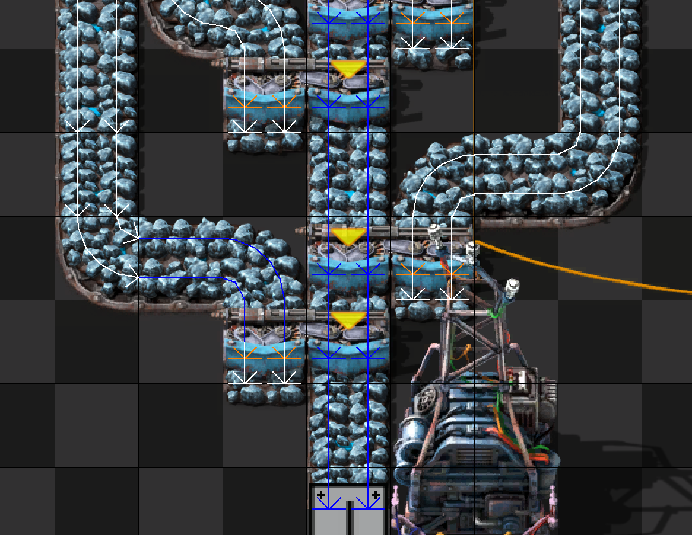
One observation made for the splitter_worst configuration was that on the final splitter in the chain, the input side without priority continuously flickered blue in show-transport-lines debug. (This was true for every design that used splitters, but only splitter_worst had this flickering travel all the way back up to the miners. The other designs only had 1 tile of length of flickering before the next splitter). To test this, I added a temporary red wire to a belt before the splitter, and removed the default circuit conditions from it. Then I removed the red wire. Because the belt piece didn't have the default condition anymore, it inserted an additional split in the transport line.
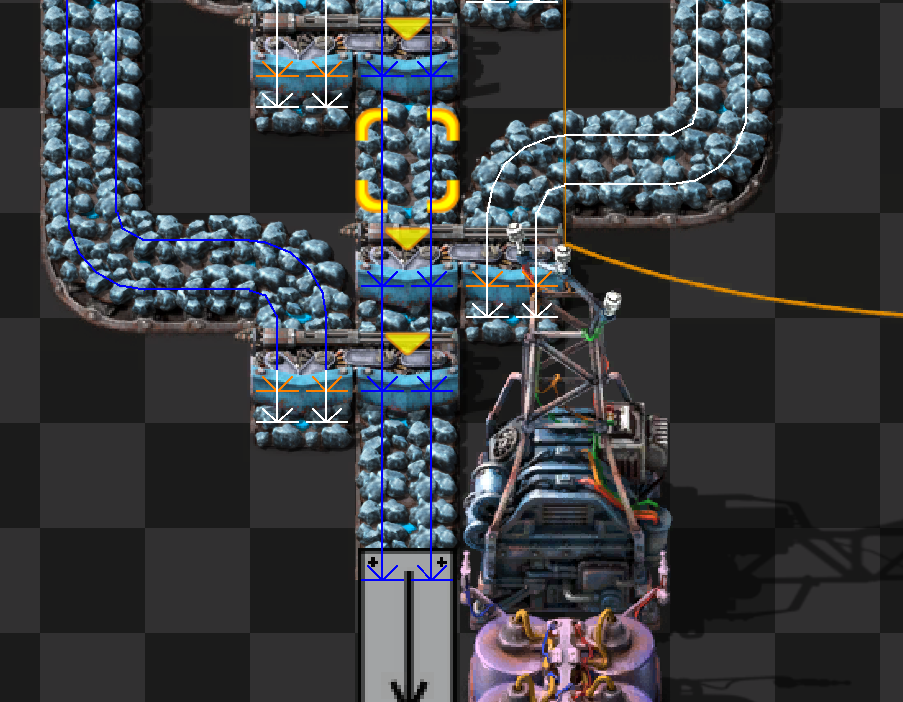
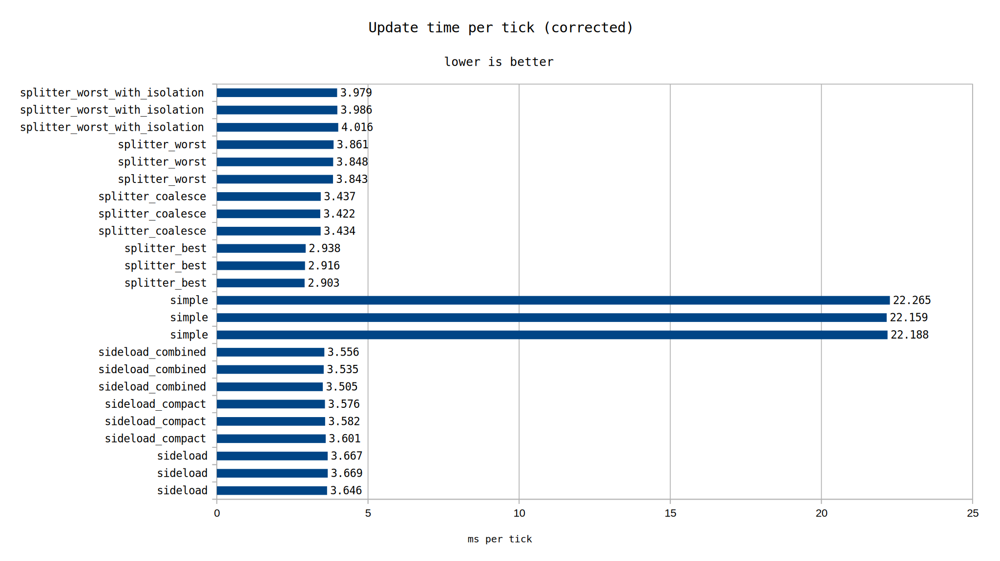
In looking at the above data, I got interested to see how the performance changes over time as miners deplete. This will be explored under the assumption that a miner always produces a full lane until the moment it is depleted.
As to reduce the number of permutations, I will remove a few maps from further consideration. The simple option performs very badly initially, so no reason to continue using it. The splitter_worst options aren't that interesting, since splitter_best is better initially, and we will still be able to see if it degrades to the level of splitter_worst. The number of sideload options will just be reduced to the single, base, sideload option.
To test depletion, I modified the ore amounts to 1 under each pairing of miners based on when the first miner pairing would deplete. The command
/c top=-66 bot=(top + 5) for i, ent in pairs(game.player.surface.find_entities_filtered{type="resource"}) do if ent.position.y > top and ent.position.y < bot then ent.amount=1 end end
was tailored for each map to deplete the first, second, etc. pairs of miners
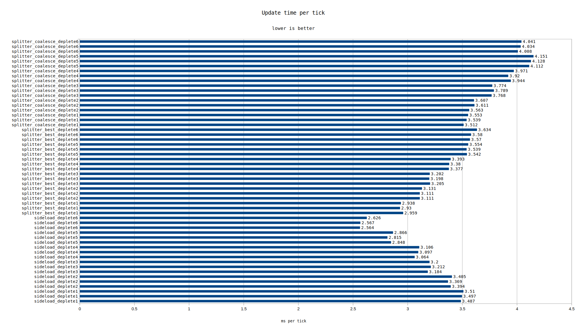
To take this line of reasoning to its logicial conclusion, I created two more maps at the "nano" scale. They consist of 4 miners, and joining is handled by a single splitter or by sideloading the ore.
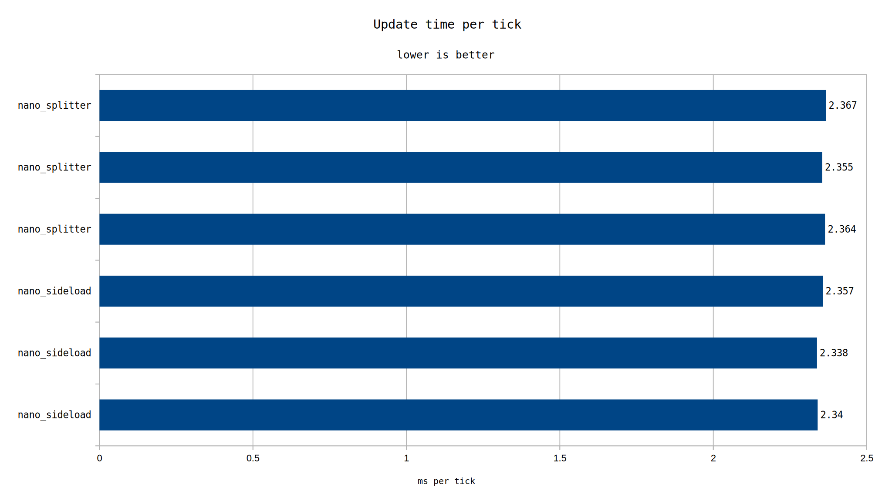
At this point, the differences if there are any have entirely evaporated. Either option is just as good as another.
If there was a design based on sideloading where each active belt is only aware of 1 sideload per lane per depleted miner, it's possible that could maintain excellent performance.
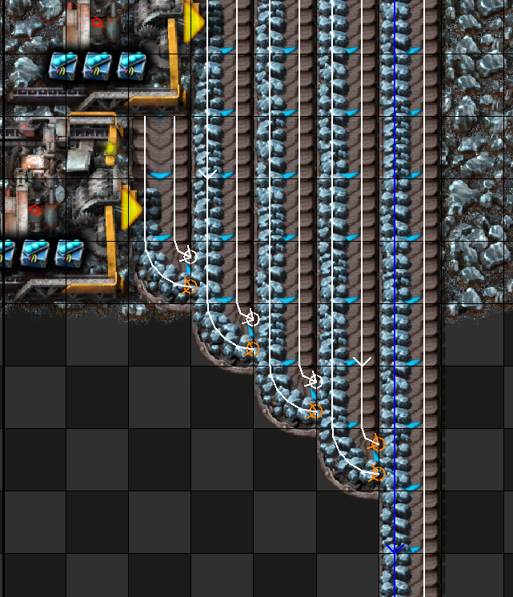
The picture shows the idea best. As long as the rightmost miner has ore, it's only aware of one sideload. Once that depletes, only two and so on. I couldn't come up with a way to fit this tiled 7 miners deep like was done for the other tests. And at some point I need finish one test before it becomes a run on sentence. I'll continue to investigate and possibly create another test if I find something good.
All maps will be uploaded here.
If striving to keep belts full for longer by having more than one miner per belt, care should be taken to keep the miners from checking for available space in front of them. Most or all options appear to be good options, as long as the only miner with ore moving in front of it is the one doing the mining. Sideloading might have the slight edge, but it's definitely not clear cut better one way or another.